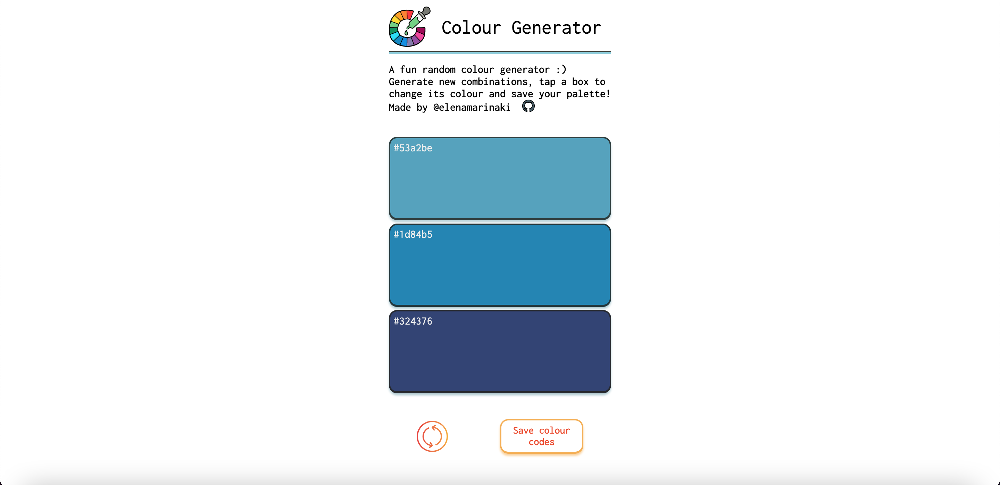
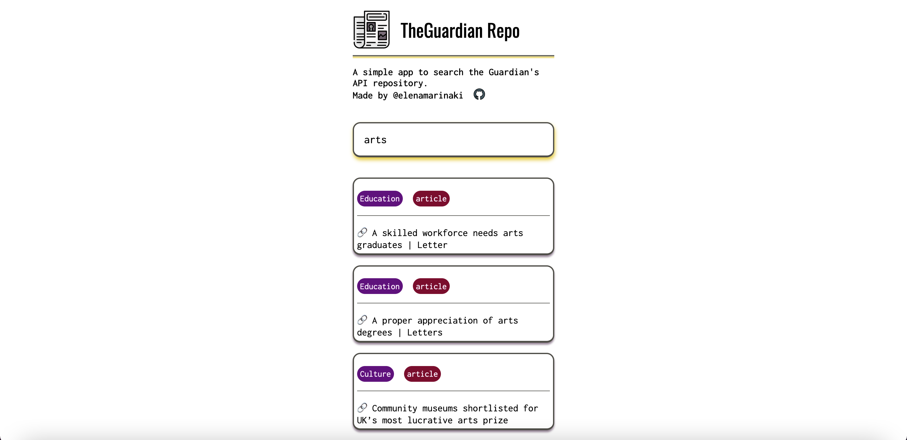
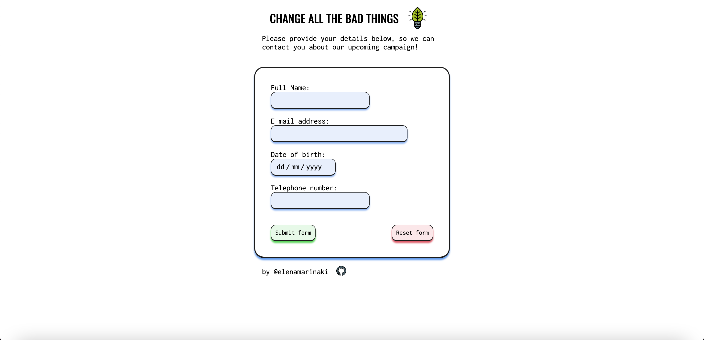
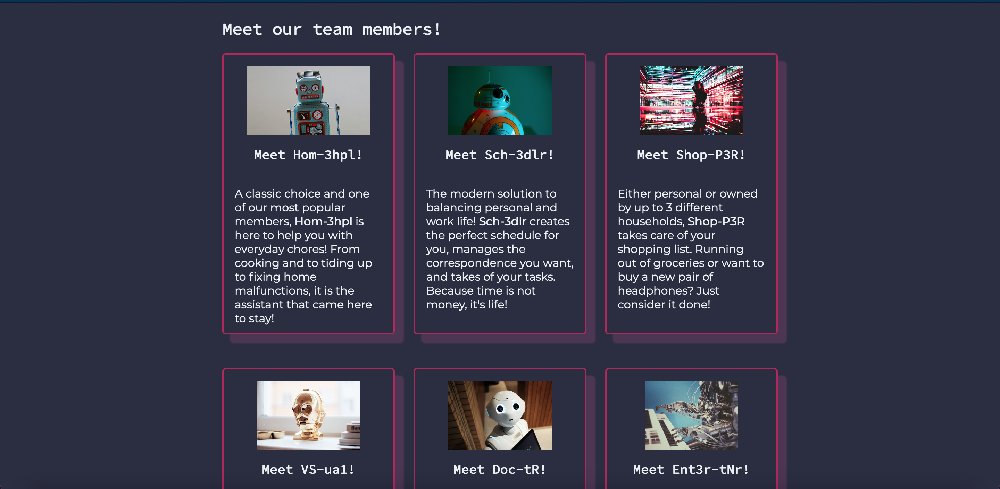
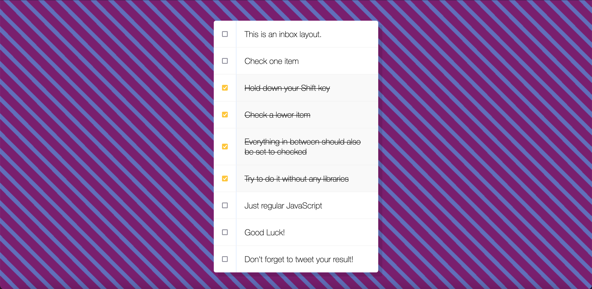
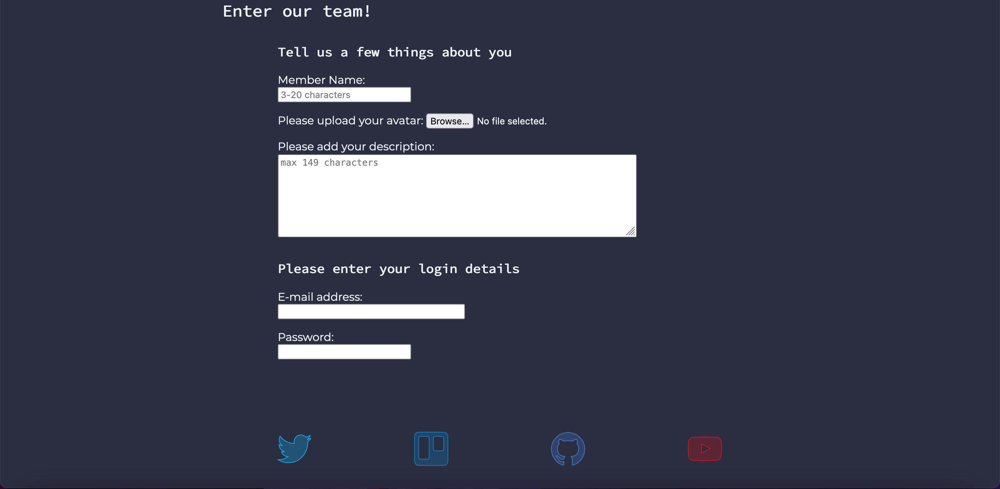

FAC22 Project Collection
A collection of projects I am working on with the cool people @Founders & Coders :)
-

A fun random colour generator!
-

A simple app to search the Guardian's API repository.
-

Covid Tracker App
-

Form (with validation) that stores data in a database.
-

Agency Website - MEA Robotics
-

Hold
Shiftto check multiple checkboxes -

Form implementation for members area - Validation of all input fields